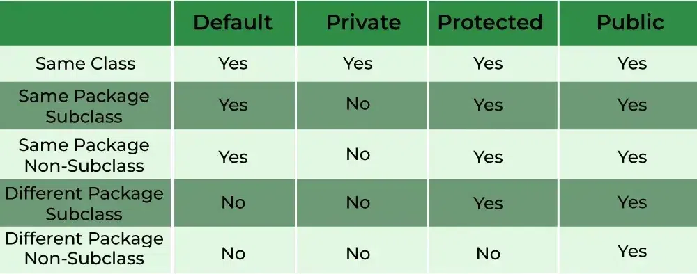
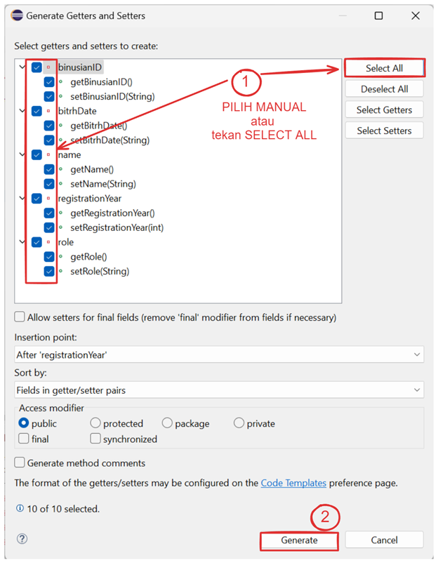

Encapsulation
Setelah mengerti apa itu class dan object, kita akan masuk ke prinsip-prinsip utama OOP, mulai dari encapsulation.
Access Modifier
Untuk melakukan encapsulation, salah satu yang penting untuk diketahui adalah access modifier. Access modifier adalah keyword yang digunakan untuk mengatur aksesibilitas dari suatu class, atribut, atau method. Terdapat 4 jenis access modifier dalam Java, penjelasannya sebagai berikut:
{kind=link}
Access Modifier dalam Java
Public: Atribut atau method yang dideklarasikan dengan access modifier public dapat diakses dari mana saja, baik dari dalam class itu sendiri, class lain dalam package yang sama, maupun class lain di package yang berbeda.
Protected: Atribut atau method yang dideklarasikan dengan access modifier protected hanya dapat diakses dari dalam class itu sendiri, class lain dalam package yang sama, atau class turunan (subclass) dari class
Default: Atribut atau method yang dideklarasikan tanpa access modifier (default) hanya dapat diakses dari dalam class itu sendiri dan class lain dalam package yang sama.
Private: Atribut atau method yang dideklarasikan dengan access modifier private hanya dapat diakses dari dalam class itu sendiri.
Encapsulation in Java
Setelah mengerti tentang access modifier, mari kita pelajari encapsulation. Encapsulation adalah proses menyembunyikan detail implementasi dari objek dan hanya mengekspos fungsionalitas yang diperlukan. Dalam OOP, encapsulation memungkinkan kita untuk mengatur akses ke atribut dan metode dari suatu objek, sehingga atribut dan metode dari suatu objek tidak dapat sembarangan diakses dari luar class.
Pada Java, encapsulation dapat dilakukan dengan cara mendeklarasikan atribut sebagai private dan membuat method getter (accessor) dan setter (mutator) untuk mengakses dan mengubah nilai dari atribut tersebut.
Catatan
Pada aplikasi Eclipse, terdapat shortcut untuk dapat membuat method getter dan setter secara otomatis. Tekan tombol ALT + SHIFT + S secara bersamaan, kemudian tekan tombol R.
{kind=link}
Tampilan shortcut Method Getter dan Setter
Pada window konfigurasi yang muncul, pilih method yang ingin dibuat. Gunakan tombol "Select All" yang ada pada bagian kanan untuk memilih semua method. Apabila sudah, tekan tombol Generate.
{kind=link}
Tampilan konfigurasi Method Getter dan Setter
Berikut adalah contoh implementasi encapsulation dalam Java:
public class Main{
public class Binusian{
// Deklarasi atribut sebagai private
private String binusianID;
private String name;
private String birthDate;
private String role;
private int registrationYear;
// Method getter untuk mengakses nilai atribut
public String getBinusianID() {
return binusianID;
}
public String getName() {
return name;
}
public String getBirthDate() {
return birthDate;
}
public String getRole() {
return role;
}
public int getRegistrationYear() {
return registrationYear;
}
// Method setter untuk mengubah nilai atribut
public void setBinusianID(String binusianID) {
this.binusianID = binusianID;
}
public void setName(String name) {
this.name = name;
}
public void setBirthDate(String birthDate) {
this.birthDate = birthDate;
}
public void setRole(String role) {
this.role = role;
}
public void setRegistrationYear(int registrationYear) {
this.registrationYear = registrationYear;
}
}
public Main() {
// Membuat object dari class Binusian
Binusian binusian = new Binusian();
// Mengubah nilai atribut menggunakan setter
binusian.setBinusianID("BN123456789");
binusian.setName("Java");
binusian.setBirthDate("01-01-2004");
binusian.setRole("Mahasiswa");
binusian.setRegistrationYear(2022);
// Menampilkan isi atribut menggunakan getter
System.out.println("Binusian ID = " + binusian.getBinusianID());
System.out.println("Nama = " + binusian.getName());
System.out.println("Tanggal Lahir = " + binusian.getBirthDate());
System.out.println("Peran = " + binusian.getRole());
System.out.println("Tahun Pendaftaran = " + binusian.getRegistrationYear());
}
public static void main(String[] args) {
new Main();
}
}
Binusian ID = BN123456789
Nama = Java
Tanggal Lahir = 01-01-2004
Peran = Mahasiswa
Tahun Pendaftaran = 2022